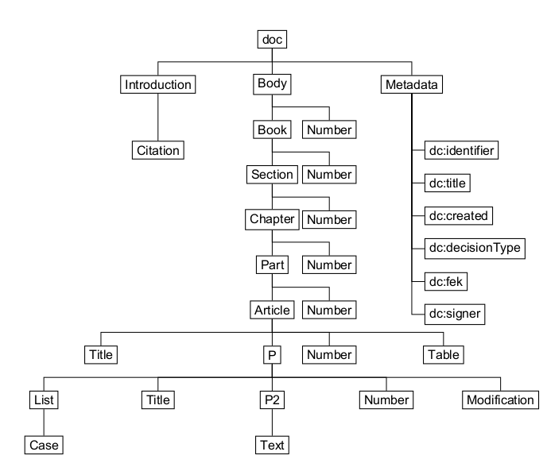
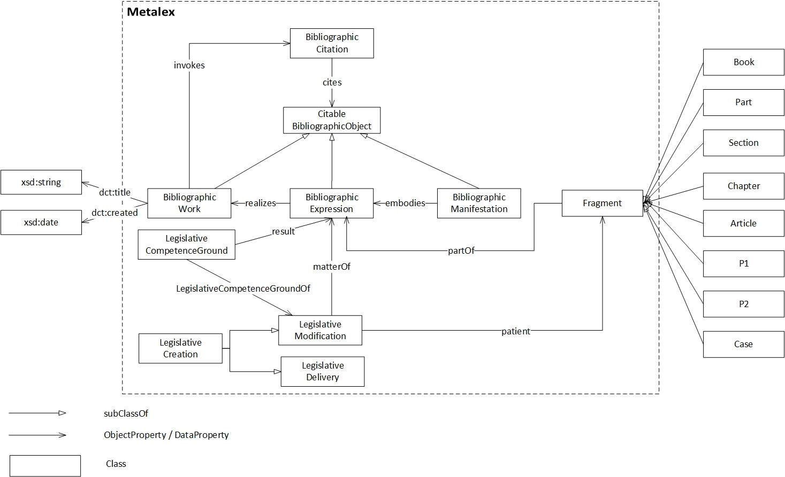

Ηλίας Χαλκίδης (Ilias Chalkidis)
Ηλίας Χαλκίδης (Ilias Chalkidis)
Προπτυχιακός Φοιτητής, Τμήμα Πληροφορικής & Τηλ/νωνιών, ΕΚΠΑ
sdi0700122[at]di.uoa.gr
Ηλίας Χαλκίδης (Ilias Chalkidis)
Προπτυχιακός Φοιτητής, Τμήμα Πληροφορικής & Τηλ/νωνιών, ΕΚΠΑ
sdi0700122[at]di.uoa.gr
| gr | / | en |
Στο πλαίσιο της προσπάθειας ανάπτυξης τέτοιων νομοθετικών συστημάτων Ανοιχτών Δεδομένων (Open Data), η διεθνής πρακτική συμπυκνώνεται στις ακόλουθες προδιαγραφές:
Όπως γνωρίζουμε, στην χώρα μας δεν υπάρχει κάποια ουσιώδη μηχανογράφηση της ελληνικής νομοθεσίας, επομένως καλούμαστε να δημιουργήσουμε εμείς τι βάσεις για κάτι τέτοιο προτείνοντας ένα νέο XML σχήμα. Το XML σχήμα, το οποία είναι ουσιαστικά μια δομή μιας νέας γλώσσα σήμανσης, όπως αναφέρθηκε, πρέπει να ανταποκρίνεται σε δύο βασικά κριτήρια. Να είναι όσο το δυνατόν αφαιρετικό και επεκτάσιμο και ταυτόχρονα να τηρεί τους κανόνες της κωδικοποίησης της ελληνικής νομοθεσίας. Επίσης, θα πρέπει να έχουμε προνοήσει για τις περιπτώσεις των τροπολογιών και να περιλαμβάνει τα κατάλληλα στοιχεία και χαρακτηριστικά για αυτή η προοπτική. Στο Σύστημα Διαχείρισης Περιεχομένου (ΣΔΠ, Content Management System, CMS) μας κάθε νομικό έγγραφο αντιπροσωπεύεται από ένα ξεχωριστό αρχείο XML και δεν αποθηκεύουμε κανένα επικαιροποιημένο νομικό έγγραφο. Κάθε ενημέρωση γίνεται μηχανικά, και όχι χειροκίνητα. Με βάση τις διεθνείς πρακτικές και τα βασικά κριτήρια, που αναφέρονται παραπάνω, προτείνουμε το ακόλουθο πρότυπο. 
Ας δούμε για παράδειγμα την απεικόνιση του προεδρικού διατάγματος ΠΔ 2011/54 με τίτλο “Σύσταση Ειδικής Υπηρεσίας Δημοσίων Έργων Αντιπλημμυρικής προστασίας της Κοιλάδας του ποταμού Έβρου και των παραποτάμων του (ΕΥΔΕ ΕΒΡΟΥ)”, σε XML μορφή (εδώ).
Η χρήση των τεχνολογιών του Σημασιολογικού Ιστού στο πλαίσιο αυτού του έργου επικεντρώνεται κυρίως στην αναπαράσταση γνώσης σχετικά με τα νομοθετικά γεγονότα (δημοσίευση, τροποποίηση, κατάργηση), τα οποίες επηρεάζουν την εγκυρότητα, το περιεχόμενο και τη γενική συμπεριφορά κάθε νομικού εγγράφου. Για το σκοπό αυτό, έχουμε υιοθετήσει το πρότυπο / οντολογία CEN Metalex, του οποίου ο πυρήνας είναι ο πλέον κατάλληλος
για να αναπαρασταθεί τέτοιου είδους γνώση / πληροφορία. Η οντολογία CEN Metalex OWL χρησιμοποιεί ένα μοντέλο που βασίζεται στην νομοθετική αναπαραστάση γνώσης νομοθετικών γεγονότων που αφορούν τα νομικά έγγραφα και τα χαρακτηριστικά που αυτά συνεπάγονται.Η συγκεκριμένη οντολογία, η οποία χρησιμοποιείται στα κορυφαία project δημοσίευσης νομοθεσίας με την βοήθεια Linked Data, όπως το ολλανδικό και το βρετανικό. Οι βασικές σχέσεις είναι: Νόμου (BibliographicWork) - Έκδοσης (BibliographicExpression)- Αρχείου(BibliographicManifestation) και h σχέση που ορίζεται ανάμεσα στην νομοθετική αλλαγή (LegislativeModification), την πηγή της (LegislativeCompetenceGround-BibliographicWork), το πεδίο εφαρμογής (BibliographicWork) και την νέα έκδοση (BibliographicExpression)που προκαλεί. Tα παραπάνω απεικονίζονται στο διάγραμμα που ακολουθεί.

Ως παράδειγμα επεξήγησης θα πάρουμε το ΠΔ 2011/50, που είχαμε και παραπάνω, και το ΠΔ/2012/10 το οποίο προκαλεί τροποποιήσεις στο συγκεκριμένο προεδρικό διάταγμα. Τα βασικά αντικείμενα που έχουμε ορίσει φαίνονται στην εικόνα:

Ας υποθέσουμε τώρα ότι θέλουμε να βρούμε όλες τις τροποποιήσεις που έχουν σημειωθεί σχετικά με το ΠΔ 2011/54, ώστε να κατασκευάσουμε μια up-to-date έκδοση αυτού του ΠΔ. Ένα απλό SPARQL query μας δίνει τα εξής αποτελέσματα:

Πλέον έχουμε ότι χρειαζόμαστε ως πληροφορία ώστε να ανατρέξουμε στα XML αρχεία μας, να "τσιμπίσουμε" τις τροποποίησεις από το ΠΔ 2012/10 και να τις φορέσουμε στο αρχικό XML του ΠΔ 2011/54! Με ανάλογο τρόπο θα μπορούσαμε να κατασκευάσουμε και ημερολογιακές εκδόσεις (Π.Χ. Το ΠΔ 2011/54 όπως ίσχυε στις 31 Δεκέμβρη του 2011).
Βασικοί στόχοι - Λειτουργίες της Web εφαρμογής, είναι οι εξής:
Η συγκεκριμένη υπηρεσία αφορά την αναζήτηση πηγών δικαίου βάση θεματικών, λεκτικών και χρονολογικών κριτηρίων μέσα από κατάλληλες φόρμες. Στοιχεία όπως λέξεις κλειδιά, ημερομηνία (πλήρης ή μόνο έτος) έκδοσης, τύπος πηγής δικαίου κ.α. είναι σημαντικά στην διαδικασία αναζήτησης, από πλευράς χρηστών, της πληροφορίας που τους ενδιαφέρει.
Βασικά Βήματα Υλοποίησης:
Η συγκεκριμένη υπηρεσία αφορά την παρουσίαση συγκεκριμένης πηγής δικαίου. Ο χρήστης έχει την δυνατότητα να δει τα βασικά στοιχεία (λ.χ. ημερομηνία, νομοθέτης), πίνακα περιεχόμενων, αλλά και να ανατρέξει σε οποιοδήποτε σημείο-μέρος του κειμένου επιθυμεί.
Βασικά Βήματα Υλοποίησης:
Η συγκεκριμένη υπηρεσία αφορά την παρουσίαση συγκεκριμένης πηγής δικαίου, που έχει υποστεί τροποποιήσεις στην παρόδο του χρόνου. Ο χρήστης έχει την δυνατότητα να δει τα βασικά στοιχεία (λ.χ. ημερομηνία, νομοθέτης), πίνακα περιεχόμενων, αλλά και να ανατρέξει σε οποιοδήποτε σημείο-μέρος του κειμένου επιθυμεί.
Βασικά Βήματα Υλοποίησης:
Η συγκεκριμένη υπηρεσία παρουσιάζει με σειρά προτεραιότητας τις αναζητήσεις πηγών δικαίου με την μεγαλύτερη επισκεψιμότητα. Είναι πολύ πιθανό ο χρήστης να ενδιαφέρεται για κάποιες από αυτές τις πηγές δικαίου, καθώς παρουσιάζουν υψηλό ενδιαφέρον.
Βασικά Βήματα Υλοποίησης:
Πτυχιακή Εργασία "Νομοθεσί@, Πλατφόρμα για
την Ελληνική νομοθεσία", Ηλίας Χαλκίδης (PDF)
XML Αρχείο του ΠΔ 2011/54
XML Αρχείο του ΠΔ 2012/10
Αρχείο OWL/RDF data sets Ελληνικής Νομοθεσίας
GRLegislation Apache Cocoon Project (UPDATED) (Running on Jetty Server)
Ηλίας Χαλκίδης (Ilias Chalkidis)
Προπτυχιακός Φοιτητής, Τμήμα Πληροφορικής & Τηλ/νωνιών, ΕΚΠΑ
sdi0700122[at]di.uoa.gr